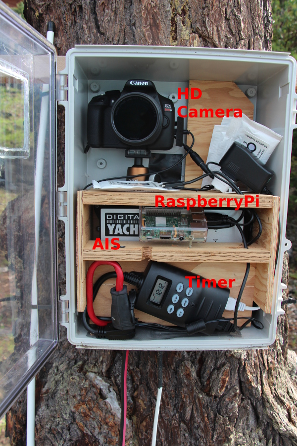

Orcasound lab: a soundscape analysis case study in killer whale habitat with implications for coastal ocean observatories

Val Veirs and Scott Veirs, Beam Reach (SPC), Seattle, WA
Lauren McWhinnie, Patrick O’Hara, & Gregory O’Hagan, NEMES/U.Vic, Victoria, BC
Victoria ASA meeting, Nov 9, 2018
(NEMES = Noise Exposure to the Marine Environment from Ships)
Orcasound app and Orcasound Lab


|
Our study site:

Thank you to everyone who backed our Kickstarter!
|
Acoustic data and methods
One year of underwater noise recordings (11/2016 - 11/2017)
 |
Automatic Information System (AIS) data |
2017 vessel behavior and noise study
Collaboration with NEMES
 |

|
 |
Receive levels are similar, but boat noise is brief compared to ships

Broadband SPL distribution: seasonal and diurnal differences
This is a test title that is pretty long...
|
 |
Broadband SPL distribution: received, without ships, without boats
This is a test title that is pretty long...
|
 |
/